1. State Comparison
The standard Button state vocabulary currently being evaluated.
2. Live Interaction Test
Move the pointer and use the keyboard to evaluate the proposed states.
3. Button Roles Under Consideration
These are working categories, not yet a finalized taxonomy.
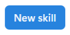
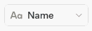
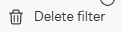
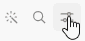
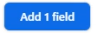
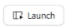
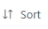
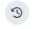
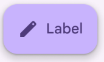
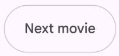
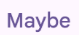
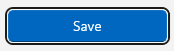
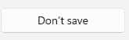
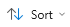
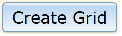
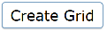
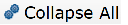
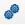
4. Current Button Token Set
Names are more authoritative than the provisional values.
| Token | Current value | Role |
|---|---|---|
| --ui-color-surface-hover | #eaf3ff PROVISIONAL | Very-light Claro Blue hover surface. |
| --ui-color-surface-active | #dcecff PROVISIONAL | Pressed/active surface for regular controls. |
| --ui-color-border | #cfd5dc PROVISIONAL | Default button border. |
| --ui-color-focus-ring | #3b82d0 PROVISIONAL | Focus-visible indicator. |
| --ui-button-height | 32px PROVISIONAL | Default button height. |
| --ui-button-radius | 5px PROVISIONAL | Button corner radius. |
| --ui-button-gap | 7px PROVISIONAL | Text/icon gap. |
5. Design Questions to Resolve
Items that should be settled before Button becomes a finalized component specification.
- Is the Claro Blue hover sufficiently subtle, or should it be lighter?
- Should the hover surface be accompanied by a border change, or should the border remain unchanged?
- How should hover interact with a selected/toggled button?
- How should ActionBar buttons differ from regular/dialog buttons?
- What is the final distinction between Primary, Secondary and Transparent/Tertiary actions?
- Should icon-only buttons use the same hover surface and geometry?
- What is the final focus treatment?
- What are the final Compact, Default and Comfortable dimensions?
- How much of the Button treatment should be shared by other controls?
- Which values should become global semantic tokens?
6. Current Decisions
Promote these into Design_System.html when they are sufficiently established.
- D-001: The overall UI should remain restrained and predominantly neutral.
- D-002: Hover can be a place where subtle color appears rather than remaining persistently visible.
- D-003: Very-light Claro Blue is the current preferred hover direction for appropriate transparent buttons.
- D-004: Elevation/shadow is not a general Button visual-treatment mechanism.
- D-005: Semantic tokens should be used even when the initial values are provisional.
7. Notes for Future Iterations
This Lab is intentionally not a final implementation. It is the place where visual hypotheses can be tested before they become design-system rules.
Once the Button design is sufficiently settled, the final decisions
should be promoted to Design_System.html and the
provisional values in this Lab should be replaced with the approved
semantic tokens.
The same pattern should subsequently be used for TextBox, Select, Checkbox, Menu, Dialog, Grid and other representative components.